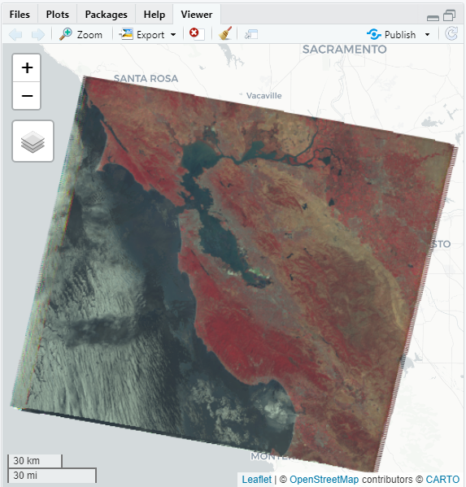

Reducer
This section requires the next libraries:
Reducer Overview
Reducers are the way to aggregate data over time, space, bands, arrays and other data structures in Earth Engine. The ee$Reducer class specifies how data is aggregated. The reducers in this class can specify a simple statistic to use for the aggregation (e.g. minimum, maximum, mean, median, standard deviation, etc.), or a more complex summary of the input data (e.g. histogram, linear regression, list). Reductions may occur over time ( imageCollection$reduce() )ç, space ( image$reduceRegion() , image$reduceNeighborhood() ), bands ( image$reduce() ), or the attribute space of a FeatureCollection ( featureCollection$reduceColumns() or FeatureCollection methods that start with aggregate_).
Reducers have inputs and outputs
Reducers take an input dataset and produce a single output. When a single input reducer is applied to a multi-band image, Earth Engine automatically replicates the reducer and applies it separately to each band. As a result, the output image has the same number of bands as the input image; each band in the output is the reduction of pixels from the corresponding band in the input data. Some reducers take tuples of input datasets. These reducers will not be automatically replicated for each band. For example, ee$Reducer$LinearRegression() takes multiple predictor datasets (representing independent variables in the regression) in a particular order (see Regression reducers).
Some reducers produce multiple outputs, for example ee$Reducer$minMax(), ee$Reducer$histogram() or ee$Reducer$toList(). For example:
# Load and filter the Sentinel-2 image collection.
collection <- ee$ImageCollection("COPERNICUS/S2")$
filterDate("2016-01-01", "2016-12-31")$
filterBounds(ee$Geometry$Point(c(-81.31, 29.90)))
# Reduce the collection$
extrema <- collection$reduce(ee$Reducer$minMax())This will produce an output with twice the number of bands of the inputs, where band names in the output have ‘_min’ or ‘_max’ appended to the band name.
The output type should match the computation. For example, a reducer applied to an ImageCollection has an Image output. Because the output is interpreted as a pixel value, you must use reducers with a numeric output to reduce an ImageCollection (reducers like toList() or histogram() won’t work).
Reducers use weighted inputs
By default, reductions over pixel values are weighted by their mask, though this behavior can be changed (see the Weighting section). Pixels with mask equal to 0 will not be used in the reduction.
Combining reducers
If your intent is to apply multiple reducers to the same inputs, it’s good practice to combine() the reducers for efficiency. Specifically, calling combine() on a reducer with sharedInputs set to true will result in only a single pass over the data. For example, to compute the mean and standard deviation of pixels in an image, you could use something like this:
# Load a Landsat 8 image.
image <- ee$Image("LANDSAT/LC08/C01/T1/LC08_044034_20140318")
# Combine the mean and standard deviation reducers.
reducers <- ee$Reducer$mean()$combine(
reducer2<- ee$Reducer$stdDev(),
sharedInputs<- TRUE
)
# Use the combined reducer to get the mean and SD of the image.
stats <- image$reduceRegion(
reducer<- reducers,
bestEffort<- TRUE
)
# Display the dictionary of band means and SDs.
print(stats$getInfo())In the output, note that the names of the reducers have been appended to the names of the inputs to distinguish the reducer outputs. This behavior also applies to image outputs, which will have the name of the reducer appended to output band names.
ImageCollection Reductions
Consider the example of needing to take the median over a time series of images represented by an ImageCollection. To reduce an ImageCollection, use imageCollection$reduce(). This reduces the collection of images to an individual image as illustrated in Figure 1. Specifically, the output is computed pixel-wise, such that each pixel in the output is composed of the median value of all the images in the collection at that location. To get other statistics, such as mean, sum, variance, an arbitrary percentile, etc., the appropriate reducer should be selected and applied. (See the Docs tab in the Rstudio for a list of all the reducers currently available). For basic statistics like min, max, mean, etc., ImageCollection has shortcut methods like min(), max(), mean(), etc. They function in exactly the same way as calling reduce(), except the resultant band names will not have the name of the reducer appended.

Figure 1. Illustration of an ee.Reducer applied to an ImageCollection.
For an example of reducing an ImageCollection, consider a collection of Landsat 5 images, filtered by path and row. The following code uses reduce() to reduce the collection to one Image (here a median reducer is used simply for illustrative purposes):
# Load an image collection, filtered so it's not too much data.
collection <- ee$ImageCollection("LANDSAT/LT05/C01/T1")$
filterDate("2008-01-01", "2008-12-31")$
filter(ee$Filter$eq("WRS_PATH", 44))$
filter(ee$Filter$eq("WRS_ROW", 34))
# Compute the median in each band, each pixel.
# Band names are B1_median, B2_median, etc.
median <- collection$reduce(ee$Reducer$median())
# The output is an Image. Add it to the map.
vis_param <- list(
bands<- c("B4_median", "B3_median", "B2_median"),
gamma<- 1.6
)
Map$setCenter(-122.3355, 37.7924, 9)
Map$addLayer(median, vis_param)This returns a multi-band Image, each pixel of which is the median of all unmasked pixels in the ImageCollection at that pixel location. Specifically, the reducer has been repeated for each band of the input imagery, meaning that the median is computed independently in each band. Note that the band names have the name of the reducer appended: ‘B1_median’, ‘B2_median’, etc. The output should look something like Figure 2.
For more information about reducing image collections, see the reducing section of the ImageCollection docs. In particular, note that images produced by reducing an ImageCollection have no projection. This means that you should explicitly set the scale on any computations involving computed images output by an ImageCollection reduction.
|  |
|---|
| Figure 2. A false color composite of the median of Landsat 5 scenes in 2008. |
Image Reductions
To reduce an Image, use image$reduce(). Reducing an image functions in an analogous way to imageCollection$reduce(), except the bands of the image are input to the reducer rather than the images in the collection. The output is also an image with number of bands equal to number of reducer outputs. For example:
# Load an image and select some bands of interest.
image <- ee$Image("LANDSAT/LC08/C01/T1/LC08_044034_20140318")$
select(c("B4", "B3", "B2"))
# Reduce the image to get a one-band maximum value image.
maxValue <- image$reduce(ee$Reducer$max())
# Display the result.
Map$centerObject(image, 10)
Map$addLayer(maxValue, list(max<- 13000), "Maximum value image")Statistics of an Image Region
reduceRegion
To get statistics of pixel values in a region of an ee$Image, use image$reduceRegion(). This reduces all the pixels in the region(s) to a statistic or other compact representation of the pixel data in the region (e.g. histogram). The region is represented as a Geometry, which might be a polygon, containing many pixels, or it might be a single point, in which case there will only be one pixel in the region. In either case, as illustrated in Figure 3, the output is a statistic derived from the pixels in the region.

Figure 3. An illustration of an ee$Reducer applied to an image and a region.
For an example of getting pixel statistics in a region of an image using reduceRegion(), consider finding the mean spectral values of a 5-year Landsat composite within the boundaries of the Sierra Nevada Coniferous Forest (illustrated by Figure 4):
# Load input imagery: Landsat 7 5-year composite.
image <- ee$Image("LANDSAT/LE7_TOA_5YEAR/2008_2012")
# Load an input region: Sierra Nevada.
region <- ee$Feature(ee$FeatureCollection("EPA/Ecoregions/2013/L3")$
filter(ee$Filter$eq("us_l3name", "Sierra Nevada"))$
first())
# Reduce the region. The region parameter is the Feature geometry.
meanDictionary <- image$reduceRegion(
reducer<- ee$Reducer$mean(),
geometry<- region$geometry(),
scale<- 30,
maxPixels<- 1e9
)
# The result is a Dictionary. Print it.
print(meanDictionary$getInfo())To force the computation, it suffices to print the result, which the Rstudio will display as a Dictionary in the console. The output should look something like:
B1: 25.406029716816853 B2: 23.971497014238988 B3: 22.91059593763103 B4: 54.83164133293403 B5: 38.07655472573677 B6_VCID_2: 198.93216428012906 B7: 24.063261634961563
Figure 4. False color composite of the Landsat image data for California and Nevada. The region over which to reduce is shown in white.
Note that in this example the reduction is specified by providing the reducer (ee$Reducer$mean()), the geometry (region$geometry()), the scale (30 meters) and maxPixels for the maximum number of pixels to input to the reducer. A scale should always be specified in reduceRegion() calls. This is because in complex processing flows, which may involve data from different sources with different scales, the scale of the output will not be unambiguously determined from the inputs. In that case, the scale defaults to 1 degree, which generally produces unsatisfactory results. See this page for more information about how Earth Engine handles scale.
There are two ways to set the scale: by specifying the scale parameter, or by specifying a CRS and CRS transform. (See the glossary for more information about CRS’s and CRS transforms). For example, the meanDictionary reduction (above) is equivalent to the following:
# As an alternative to specifying scale, specify a CRS and a CRS transform.
# Make this array by constructing a 4326 projection at 30 meters,
# then copying the bounds of the composite, from composite.projection().
affine <- c(0.00026949458523585647, 0, -180, 0, -0.00026949458523585647, 86.0000269494563)
# Perform the reduction, print the result.
print(image$reduceRegion(
reducer<- ee$Reducer$mean(),
geometry<- region$geometry(),
crs<- "EPSG:4326",
crsTransform<- affine,
maxPixels<- 1e9
)$getInfo())In general, specifying the scale is sufficient and results in more readable code. Earth Engine determines which pixels to input to the reducer by first rasterizing the region. If a scale is specified without a CRS, the region is rasterized in the image’s native projection scaled to the specified resolution. If both a CRS and scale are specified, the region is rasterized based on them.
Pixels in the region
Pixels are determined to be in the region (and weighted) according to the following rules, applied in the specified scale and projection:
- Unweighted reducers (e.g.
ee$Reducer$count()oree$Reducer$mean()$unweighted()): pixels are included if their centroid is in the region and the image’s mask is non-zero. - Weighted reducers (e.g.
ee$Reducer$mean()): pixels are included if at least (approximately) 0.5% of the pixel is in the region and the image’s mask is non-zero; their weight is the minimum of the image’s mask and the (approximate) fraction of the pixel covered by the region.
The maxPixels parameter is needed to get the computation to succeed. If this parameter is left out of the example, an error is returned.
There are multiple options to get past these errors: increase maxPixels, as in the example, increase the scale, or set bestEffort to true, which automatically computes a new (larger) scale such that maxPixels is not exceeded. If you do not specify maxPixels, the default value is used.
Statistics of Image Regions
To get image statistics in multiple regions stored in a FeatureCollection, you can use image.reduceRegions() to reduce multiple regions at once. The input to reduceRegions() is an Image and a FeatureCollection. The output is another FeatureCollection with the reduceRegions() output set as properties on each Feature. In this example, means of the Landsat 7 annual composite bands in each feature geometry will be added as properties to the input features:
# Load input imagery: Landsat 7 5-year composite.
image <- ee$Image("LANDSAT/LE7_TOA_5YEAR/2008_2012")
# Load a FeatureCollection of counties in Maine.
maineCounties <- ee$FeatureCollection("TIGER/2016/Counties")$
filter(ee$Filter$eq("STATEFP", "23"))
# Add reducer output to the Features in the collection.
maineMeansFeatures <- image$reduceRegions(
collection<- maineCounties,
reducer<- ee$Reducer$mean(),
scale<- 30
)
# Print the first feature, to illustrate the result.
print(ee$Feature(maineMeansFeatures$first())$
select(image$bandNames())$
getInfo())Observe that new properties, keyed by band name, have been added to the FeatureCollection to store the mean of the composite in each Feature geometry.
Statistics of Image Neighborhoods
Rather than specifying a region over which to perform a reduction, it is also possible to specify a neighborhood in which to apply a reducer. To reduce image neighborhoods, use image$reduceNeighborhood(). In this case, the reduction will occur in a sliding window over the input image, with the window size and shape specified by an ee.Kernel. The output of reduceNeighborhood() will be another image, with each pixel value representing the output of the reduction in a neighborhood around that pixel in the input image. Figure 5 illustrates this type of reduction.

Figure 5. Illustration of reduceNeighborhood(), where the reducer is applied in a kernel.
For example, consider using National Agriculture Imagery Program (NAIP) imagery to quantify landscape differences resulting from logging in the California redwood forests. Specifically, use standard deviation (SD) in a neighborhood to represent the difference in texture between the logged area (SW of the image in Figure 2) and the protected area (NE of the image in Figure 2). For example, to get texture of a NAIP Normalized Difference Vegetation Index (NDVI) image, use reduceNeighborhood() to compute SD in a neighborhood defined by a kernel:
# Define a region in the redwood forest.
redwoods <- ee$Geometry$Rectangle(-124.0665, 41.0739, -123.934, 41.2029)
# Load input NAIP imagery and build a mosaic.
naipCollection <- ee$ImageCollection("USDA/NAIP/DOQQ")$
filterBounds(redwoods)$
filterDate("2012-01-01", "2012-12-31")
naip <- naipCollection$mosaic()
# Compute NDVI from the NAIP imagery.
naipNDVI <- naip$normalizedDifference(c("N", "R"))
# Compute standard deviation (SD) as texture of the NDVI.
texture <- naipNDVI$reduceNeighborhood(
reducer<- ee$Reducer$stdDev(),
kernel<- ee$Kernel$circle(7)
)
# Display the results.
Map$centerObject(redwoods, 12)
Map$addLayer(
naip,
{},
"NAIP input imagery"
)
Map$addLayer(
naipNDVI,
list(min<- -1, max<- 1, palette<- c("FF0000", "00FF00")),
"NDVI"
)
Map$addLayer(
texture,
list(min<- 0, max<- 0.3),
"SD of NDVI"
)Any pixel with a non-zero kernel value is included in the computation. The kernel weights are used by default, though you can change that behavior with the inputWeight argument. The input image and reduceNeighborhood() output are compared in Figure 6.
| Figure 6a. NAIP imagery of the Northern California coast. | Figure 6b. reduceNeighborhood() output using a standard deviation reducer. |
|---|---|
 |
 |
Statistics of FeatureCollection Columns
To reduce properties of features in a FeatureCollection, use featureCollection$reduceColumns(). Consider the following toy example:
# Make a toy FeatureCollection.
aFeatureCollection <- ee$FeatureCollection(c(
ee$Feature(NULL, list(foo<- 1, weight<- 1)),
ee$Feature(NULL, list(foo<- 2, weight<- 2)),
ee$Feature(NULL, list(foo<- 3, weight<- 3))
))
# Compute a weighted mean and display it.
print(aFeatureCollection$reduceColumns(
reducer<- ee$Reducer$mean(),
selectors<- list("foo"),
weightSelectors<- list("weight")
)$getInfo())Note that the inputs are weighted according to the specified weight property.
As a more complex example, consider a FeatureCollection of US census blocks with census data as attributes. The variables of interest are total population and total housing units. You can get their sum(s) by supplying a summing reducer argument to reduceColumns() and printing the result:
# Load US cenus data as a FeatureCollection.
census <- ee$FeatureCollection("TIGER/2010/Blocks")
# Filter the collection to include only Benton County, OR.
benton <- census$filter(
ee$Filter$And(
ee$Filter$eq("statefp10", "41"),
ee$Filter$eq("countyfp10", "003")
)
)
# Display Benton County cenus blocks.
Map$setCenter(-123.27, 44.57, 13)
Map$addLayer(benton)
# Compute sums of the specified properties.
properties <- c("pop10", "housing10")
sums <- benton$
filter(ee$Filter$notNull(properties))$
reduceColumns(
reducer<- ee$Reducer$sum()$`repeat`(2),
selectors<- properties
)
# Print the resultant Dictionary.
print(sums$getInfo())The output is a Dictionary representing the aggregated property according to the specified reducer.
Note that the above example uses the notNull() filter to include only features with non-null entries for selected properties in the collection being reduced. It is good practice to check for null entries to catch unexpected missing data and avoid errors resulting from calculations that include null values.
Also note that unlike imageCollection$reduce(), in which reducers are automatically repeated for each band, reducers on a FeatureCollection must be explicitly repeated using repeat(). Specifically, repeat the reducer m times for m inputs.
Raster to Vector Conversion
To convert from an Image (raster) to a FeatureCollection (vector) data type, use image$reduceToVectors(). This is the primary mechanism for vectorization in Earth Engine, and can be useful for generating regions for input to other types of reducer. The reduceToVectors() method creates polygon edges (optionally centroids or bounding boxes instead) at the boundary of homogeneous groups of connected pixels.
For example, consider a 2012 nightlights image of Japan. Let the nightlights digital number serve as a proxy for development intensity. Define zones using arbitrary thresholds on the nightlights, combine the zones into a single-band image, vectorize the zones using reduceToVectors():
# Load a Japan boundary from the Large Scale International Boundary dataset.
japan <- ee$FeatureCollection("USDOS/LSIB_SIMPLE/2017")$
filter(ee$Filter$eq("country_na", "Japan"))
# Load a 2012 nightlights image, clipped to the Japan border.
nl2012 <- ee$Image("NOAA/DMSP-OLS/NIGHTTIME_LIGHTS/F182012")$
select("stable_lights")$
clipToCollection(japan)
# Define arbitrary thresholds on the 6-bit nightlights image.
zones <- nl2012$gt(30)$add(nl2012$gt(55))$add(nl2012$gt(62))
zones <- zones$updateMask(zones$neq(0))
# Convert the zones of the thresholded nightlights to vectors.
vectors <- zones$addBands(nl2012)$reduceToVectors(
geometry<- japan,
crs<- nl2012$projection(),
scale<- 1000,
geometryType<- "polygon",
eightConnected<- FALSE,
labelProperty<- "zone",
reducer<- ee$Reducer$mean()
)
# Make a display image for the vectors, add it to the map.
display <- ee$Image(0)$updateMask(0)$paint(vectors, "000000", 3)
# Display the thresholds.
Map$setCenter(139.6225, 35.712, 9)
Map$addLayer(
zones,
list(min<- 1, max<- 3, palette<- c("0000FF", "00FF00", "FF0000")),
"raster"
) +
Map$addLayer(
display,
list(palette<- "000000"),
"vectors"
)Note that the first band in the input is used to identify homogeneous regions and the remaining bands are reduced according to the provided reducer, the output of which is added as a property to the resultant vectors. The geometry parameter specifies the extent over which the vectors should be created. In general, it is good practice to specify a minimal zone over which to create vectors. It is also good practice to specify the scale and crs to avoid ambiguity. The output type is ‘polygon’ where the polygons are formed from homogeneous zones of four-connected neighbors (i.e. eightConnected is false). The last two parameters, labelProperty and reducer, specify that the output polygons should receive a property with the zone label and the mean of the nightlights band(s), respectively.
The mapped result should look something like the Tokyo area shown in Figure 1. Inspection of the output polygons indicates that each polygon has a property storing the label of the zone ({1, 2, 3}) and the mean of the nightlights band, since the mean reducer is specified.
Figure 7. Zones of nightlights in the Tokyo, Japan area. Vector boundaries are displayed in black.
Vector to Raster Conversion
Vector to raster conversion in Earth Engine is handled by the featureCollection$reduceToImage() method. This method assigns pixels under each feature the value of the specified property. This example uses the counties data to create an image representing the land area of each county:
# Load a collection of US counties.
counties <- ee$FeatureCollection("TIGER/2018/Counties")
# Make an image out of the land area attribute.
landAreaImg <- counties$
filter(ee$Filter$notNull(list("ALAND")))$
reduceToImage(
properties<- list("ALAND"),
reducer<- ee$Reducer$first()
)
# Display the county land area image.
Map$setCenter(-99.976, 40.38, 5)
Map$addLayer(landAreaImg, list(
min<- 3e8,
max<- 1.5e10,
palette<- c("FCFDBF", "FDAE78", "EE605E", "B63679", "711F81", "2C105C")
))Specify a reducer to indicate how to aggregate properties of overlapping features. In the previous example, since there is no overlap, an ee$Reducer$first() is sufficient. As in this example, pre-filter the data to eliminate nulls that can not be turned into an image. The output should look something like Figure 8, which maps a color gradient to county size. Like all image-outputting reducers in Earth Engine, the scale is dynamically set by the output. In this case, the scale corresponds to the zoom level in the Rstudio.
Figure 8. The result of reduceToImage() using the ‘ALAND’ (land area) property of the ‘TIGER/2018/Counties’ FeatureCollection.
Grouped Reductions and Zonal Statistics
You can get statistics in each zone of an Image or FeatureCollection by using reducer$group() to group the output of a reducer by the value of a specified input. For example, to compute the total population and number of housing units in each state, this example groups the output of a reduction of a census block FeatureCollection as follows:
# Load a collection of US census blocks.
blocks <- ee$FeatureCollection("TIGER/2010/Blocks")
# Compute sums of the specified properties, grouped by state code.
sums <- blocks$
filter(ee$Filter$And(
ee$Filter$neq("pop10", list()),
ee$Filter$neq("housing10", list())
))$
reduceColumns(
selectors<- c("pop10", "housing10", "statefp10"),
reducer<- ee$Reducer$sum()$`repeat`(2)$group(
groupField<- 2,
groupName<- "state-code"
)
)
# Print the resultant Dictionary.
print(sums$getInfo())The groupField argument is the index of the input in the selectors array that contains the codes by which to group, the groupName argument specifies the name of the property to store the value of the grouping variable. Since the reducer is not automatically repeated for each input, the repeat(2) call is needed.
To group output of image$reduceRegions() you can specify a grouping band that defines groups by integer pixel values. This type of computation is sometimes called “zonal statistics” where the zones are specified as the grouping band and the statistic is determined by the reducer. In the following example, change in nightlights in the United States is grouped by land cover category:
# Load a region representing the United States
region <- ee$FeatureCollection("USDOS/LSIB_SIMPLE/2017")$
filter(ee$Filter$eq("country_na", "United States"))
# Load MODIS land cover categories in 2001.
landcover <- ee$Image("MODIS/051/MCD12Q1/2001_01_01")$
select("Land_Cover_Type_1")
# Load nightlights image inputs.
nl2001 <- ee$Image("NOAA/DMSP-OLS/NIGHTTIME_LIGHTS/F152001")$
select("stable_lights")
nl2012 <- ee$Image("NOAA/DMSP-OLS/NIGHTTIME_LIGHTS/F182012")$
select("stable_lights")
# Compute the nightlights decadal difference, add land cover codes.
nlDiff <- nl2012$subtract(nl2001)$addBands(landcover)
# Grouped a mean 'reducer': change of nightlights by land cover category.
means <- nlDiff$reduceRegion(
reducer<- ee$Reducer$mean()$group(
groupField<- 1,
groupName<- "code"
),
geometry<- region$geometry(),
scale<- 1000,
maxPixels<- 1e8
)
# Print the resultant Dictionary.
print(means$getInfo())Note that in this example, the groupField is the index of the band containing the zones by which to group the output. The first band is index 0, the second is index 1, etc.
Weighted Reductions
By default, reducers applied to imagery weight the inputs according to the mask value. This is relevant in the context of fractional pixels created through operations such as clip(). Adjust this behavior by calling unweighted() on the reducer. Using an unweighted reducer forces all pixels in the region to have the same weight. The following example illustrates how pixel weighting can affect the reducer output:
# Load a Landsat 8 input image.
image <- ee$Image("LANDSAT/LC08/C01/T1/LC08_044034_20140318")
# Creat an arbitrary region.
geometry <- ee$Geometry$Rectangle(-122.496, 37.532, -121.554, 37.538)
# Make an NDWI image$ It will have one band named 'nd'.
ndwi <- image$normalizedDifference(c("B3", "B5"))
# Compute the weighted mean of the NDWI image clipped to the region.
weighted <- ndwi$clip(geometry)$
reduceRegion(
reducer<- ee$Reducer$sum(),
geometry<- geometry,
scale<- 30
)$get("nd")
# Compute the UN-weighted mean of the NDWI image clipped to the region.
unweighted <- ndwi$clip(geometry)$
reduceRegion(
reducer<- ee$Reducer$sum()$unweighted(),
geometry<- geometry,
scale<- 30
)$get("nd")
# Observe the difference between weighted and unweighted reductions.
cat("weighted:", unlist(weighted$getInfo()))
cat("unweighted", unlist(unweighted$getInfo()))The difference in results is due to pixels at the edge of the region receiving a weight of one as a result of calling unweighted() on the reducer.
In order to obtain an explicitly weighted output, it is preferable to set the weights explicitly with splitWeights() called on the reducer. A reducer modified by splitWeights() takes two inputs, where the second input is the weight. The following example illustrates splitWeights() by computing the weighted mean Normalized Difference Vegetation Index (NDVI) in a region, with the weights given by cloud score (the cloudier, the lower the weight):
# Load an input Landsat 8 image.
image <- ee$Image("LANDSAT/LC08/C01/T1_TOA/LC08_186059_20130419")
# Compute cloud score and reverse it such that the highest
# weight (100) is for the least cloudy pixels.
cloudWeight <- ee$Image(100)$subtract(
ee$Algorithms$Landsat$simpleCloudScore(image)$select(list("cloud"))
)
# Compute NDVI and add the cloud weight band.
ndvi <- image$normalizedDifference(c("B5", "B4"))$addBands(cloudWeight)
# Define an arbitrary region in a cloudy area.
region <- ee$Geometry$Rectangle(9.9069, 0.5981, 10.5, 0.9757)
# Use a mean reducer.
reducer <- ee$Reducer$mean()
# Compute the unweighted mean.
unweighted <- ndvi$select(list("nd"))$reduceRegion(reducer, region, 30)
# compute mean weighted by cloudiness.
weighted <- ndvi$reduceRegion(reducer$splitWeights(), region, 30)
# Observe the difference as a result of weighting by cloudiness.
cat("unweighted:", unlist(unweighted$getInfo()))
cat("weighted:", unlist(weighted$getInfo()))Observe that cloudWeight needs to be added as a band prior to calling reduceRegion(). The result indicates that the estimated mean NDVI is higher as a result of decreasing the weight of cloudy pixels.
Linear Regression
Earth Engine has several methods for performing linear regression using reducers:
- ee$Reducer$linearFit()
- ee$Reducer$linearRegression()
- ee$Reducer$robustLinearRegression()
- ee$Reducer$ridgeRegression()
The simplest linear regression reducer is linearFit() which computes the least squares estimate of a linear function of one variable with a constant term. For a more flexible approach to linear modelling, use one of the linear regression reducers which allow for a variable number of independent and dependent variables. linearRegression() implements ordinary least squares regression(OLS). robustLinearRegression() uses a cost function based on regression residuals to iteratively de-weight outliers in the data (O’Leary, 1990). ridgeRegression() does linear regression with L2 regularization.
Regression analysis with these methods is suitable for reducing ee$ImageCollection, ee$Image, ee$FeatureCollection, and ee$List objects. The following examples demonstrate an application for each. Note that linearRegression(), robustLinearRegression(), and ridgeRegression() all have the same input and output structures, but linearFit() expects a two-band input (X followed by Y) and ridgeRegression() has an additional parameter (lambda, optional) and output (pValue).
ee$ImageCollection
linearFit()
The data should be set up as a two-band input image, where the first band is the independent variable and the second band is the dependent variable. The following example shows estimation of the linear trend of future precipitation (after 2006 in the NEX-DCP30 data) projected by climate models. The dependent variable is projected precipitation and the independent variable is time, added prior to calling linearFit():
# This function adds a time band to the image.
createTimeBand <- function(image) {
image$addBands(image$metadata("system:time_start")$divide(1e18))
}
# createTimeBand<- function(image) .
# # Scale milliseconds by a large constant to avoid very small slope.
# # in the linear regression output.
# image$addBands(image$metadata('system:time_start')$divide(1e18).
# Load the input image 'collection': projected climate data.
collection <- ee$ImageCollection("NASA/NEX-DCP30_ENSEMBLE_STATS")$
filter(ee$Filter$eq("scenario", "rcp85"))$
filterDate(ee$Date("2006-01-01"), ee$Date("2050-01-01"))$
map(createTimeBand)
# Reduce the collection with the linear fit reducer.
# Independent variable are followed by dependent variables.
linearFit <- collection$select(c("system:time_start", "pr_mean"))$
reduce(ee$Reducer$linearFit())
# Display the results.
Map$setCenter(-100.11, 40.38, 5)
Map$addLayer(
eeObject<- linearFit,
visParams<- list(min<- 0, max<- c(-0.9, 8e-5, 1), bands<- c("scale", "offset", "scale")),
name<- "fit"
)Observe that the output contains two bands, the ‘offset’ (intercept) and the ‘scale’ (‘scale’ in this context refers to the slope of the line and is not to be confused with the scale parameter input to many reducers, which is the spatial scale). The result, with areas of increasing trend in blue, decreasing trend in red and no trend in green should look something like Figure 9.

Figure 9. The output of linearFit() applied to projected precipitation. Areas projected to be increased precipitation are shown in blue and decreased precipitation in red.
linearRegression()
For example, suppose there are two dependent variables: precipitation and maximum temperature, and two independent variables: a constant and time. The collection is identical to the previous example, but the constant band must be manually added prior to the reduction. The first two bands of the input are the ‘X’ (independent) variables and the next two bands are the ‘Y’ (dependent) variables. In this example, first get the regression coefficients, then flatten the array image to extract the bands of interest:
# This function adds a time band to the image.
createTimeBand <- function(image) {
# Scale milliseconds by a large constant.
image$addBands(image$metadata("system:time_start")$divide(1e18))
}
# This function adds a constant band to the image.
createConstantBand <- function(image) {
ee$Image(1)$addBands(image)
}
# Load the input image collection: projected climate data.
collection <- ee$ImageCollection("NASA/NEX-DCP30_ENSEMBLE_STATS")$
filterDate(ee$Date("2006-01-01"), ee$Date("2099-01-01"))$
filter(ee$Filter$eq("scenario", "rcp85"))$
# Map the functions over the collection, to get constant and time bands.
map(createTimeBand)$
map(createConstantBand)$
# Select the predictors and the responses.
select(c("constant", "system:time_start", "pr_mean", "tasmax_mean"))
# Compute ordinary least squares regression coefficients.
linearRegression <- collection$reduce(
ee$Reducer$linearRegression(
numX<- 2,
numY<- 2
)
)
# Compute robust linear regression coefficients.
robustLinearRegression <- collection$reduce(
ee$Reducer$robustLinearRegression(
numX<- 2,
numY<- 2
)
)
# The results are array images that must be flattened for display.
# These lists label the information along each axis of the arrays.
bandNames <- list(
c("constant", "time"), # 0-axis variation.
c("precip", "temp")
) # 1-axis variation.
# Flatten the array images to get multi-band images according to the labels.
lrImage <- linearRegression$select("coefficients")$arrayFlatten(bandNames)
rlrImage <- robustLinearRegression$select("coefficients")$arrayFlatten(bandNames)
# Display the OLS results.
Map$setCenter(-100.11, 40.38, 5)
Map$addLayer(
lrImage,
list(min<- 0, max<- c(-0.9, 8e-5, 1), bands<- c("time_precip", "constant_precip", "time_precip")), "OLS"
)
# Compare the results at a specific point:
cat("OLS estimates:", unlist(lrImage$reduceRegion(
reducer<- ee$Reducer$first(),
geometry<- ee$Geometry$Point(c(-96.0, 41.0)),
scale<- 1000
)$getInfo()))
cat("Robust estimates:", unlist(rlrImage$reduceRegion(
reducer<- ee$Reducer$first(),
geometry<- ee$Geometry$Point(c(-96.0, 41.0)),
scale<- 1000
)$getInfo()))Inspect the results to discover that linearRegression() output is equivalent to the coefficients estimated by the linearFit() reducer, though the linearRegression() output also has coefficients for the other dependent variable, tasmax_mean. Robust linear regression coefficients are different from the OLS estimates. The example compares the coefficients from the different regression methods at a specific point.
ee$Image
In the context of an ee$Image object, regression reducers can be used with reduceRegion or reduceRegions to perform linear regression on the pixels in the region(s). The following examples demonstrate how to calculate regression coefficients between Landsat bands in an arbitrary polygon.
linearFit()
The guide section describing array data charts shows a scatter plot of the correlation between Landsat 8 SWIR1 and SWIR2 bands. Here, the linear regression coefficients for this relationship are calculated. A dictionary containing the properties 'offset' (y-intercept) and 'scale' (slope) are returned.
# Define a rectangle geometry around San Francisco.
sanFrancisco <- ee$Geometry$Rectangle(c(-122.45, 37.74, -122.4, 37.8))
# Import a Landsat 8 TOA image for this region.
img <- ee$Image("LANDSAT/LC08/C01/T1_TOA/LC08_044034_20140318")
# Subset the SWIR1 and SWIR2 bands. In the regression reducer, independent
# variables come first followed by the dependent variables. In this case,
# B5 (SWIR1) is the independent variable and B6 (SWIR2) is the dependent
# variable.
imgRegress <- img$select(c("B5", "B6"))
# Calculate regression coefficients for the set of pixels intersecting the
# above defined region using reduceRegion with ee.Reducer.linearFit().
linearFit <- imgRegress$reduceRegion(
reducer<- ee$Reducer$linearFit(),
geometry<- sanFrancisco,
scale<- 30
)
# Inspect the results.
cat("OLS estimates:", unlist(linearFit$getInfo()))
cat("y-intercept:", linearFit$get("offset")$getInfo())
cat("Slope:", linearFit$get("scale")$getInfo())linearRegression()
The same analysis from the previous linearFit section is applied here, except this time the ee$Reducer$linearRegression function is used. Note that a regression image is constructed from three separate images: a constant image and images representing SWIR1 and SWIR2 bands from the same Landsat 8 image. Keep in mind that you can combine any set of bands to construct an input image for region reduction by ee$Reducer$linearRegression, they do not have to belong to the same source image.
# Define a rectangle geometry around San Francisco.
sanFrancisco <- ee$Geometry$Rectangle(c(-122.45, 37.74, -122.4, 37.8))
# Import a Landsat 8 TOA image for this region.
img <- ee$Image("LANDSAT/LC08/C01/T1_TOA/LC08_044034_20140318")
# Create a new image that is the concatenation of three images: a constant,
# the SWIR1 band, and the SWIR2 band.
constant <- ee$Image(1)
x<- img$select("B5")
y<- img$select("B6")
imgRegress <- ee$Image$cat(constant, xVar, yVar)
# Calculate regression coefficients for the set of pixels intersecting the
# above defined region using reduceRegion. The numX parameter is set as 2
# because the constant and the SWIR1 bands are independent variables and they
# are the first two bands in the stack numY is set as 1 because there is only
# one dependent variable (SWIR2) and it follows as band three in the stack.
linearRegression <- imgRegress$reduceRegion(
reducer<- ee$Reducer$linearRegression(
numX<- 2,
numY<- 1
),
geometry<- sanFrancisco,
scale<- 30
)
# Convert the coefficients array to a list.
coefList <- ee$Array(linearRegression$get("coefficients"))$toList()
# Extract the y-intercept and slope.
b0 <- ee$List(coefList$get(0))$get(0) # y-intercept
b1 <- ee$List(coefList$get(1))$get(0) # slope
# Extract the residuals.
residuals <- ee$Array(linearRegression$get("residuals"))$toList()$get(0)
# Inspect the results.
cat("OLS estimates", unlist(linearRegression$getInfo()))
cat("y-intercept:", b0$getInfo())
cat("Slope:", b1$getInfo())
cat("Residuals:", residuals$getInfo())A dictionary containing properties 'coefficients' and 'residuals' are returned. The 'coefficients' property is an array with dimensions (numX, numY); each column contains the coefficients for the corresponding dependent variable. In this case, the array has two rows and one column; row one, column one is the y-intercept and row two, column one is the slope. The 'residuals' property is the vector of the root mean square of the residuals of each dependent variable. Extract the coefficients by casting the result as an array and then slicing out the desired elements or converting the array to a list and selecting coefficients by index position.
ee$FeatureCollection
Suppose you want to know the linear relationship between Sentinel-2 and Landsat 8 SWIR1 reflectance. In this example, a random sample of pixels formatted as a feature collection of points are used to calculate the relationship. A scatter plot of the pixel pairs along with the least squares line of best fit are generated (Figure 10).
# Import a Sentinel-2 TOA image.
s2ImgSwir1 <- ee$Image("COPERNICUS/S2/20191022T185429_20191022T185427_T10SEH")
# Import a Landsat 8 TOA image from 12 days earlier than the S2 image.
l8ImgSwir1 <- ee$Image("LANDSAT/LC08/C01/T1_TOA/LC08_044033_20191010")
# Get the intersection between the two images - the area of interest (aoi).
aoi <- s2ImgSwir1$geometry()$intersection(l8ImgSwir1$geometry())
# Get a set of 1000 random points from within the aoi. A feature collection
# is returned.
sample <- ee$FeatureCollection$randomPoints(
region<- aoi,
points<- 1000
)
# Combine the SWIR1 bands from each image into a single image.
swir1Bands <- s2ImgSwir1$select("B11")$
addBands(l8ImgSwir1$select("B6"))$
rename(c("s2_swir1", "l8_swir1"))
# Sample the SWIR1 bands using the sample point feature collection.
imgSamp <- swir1Bands$sampleRegions(
collection<- sample,
scale<- 30
)$
# Add a constant property to each feature to be used as an independent variable.
map(function(feature) {
feature$set("constant", 1)
})
# Compute linear regression coefficients. numX is 2 because
# there are two independent variables: 'constant' and 's2_swir1'. numY is 1
# because there is a single dependent variable: 'l8_swir1'. Cast the resulting
# object to an ee.Dictionary for easy access to the properties.
linearRegression <- ee$Dictionary(imgSamp$reduceColumns(
reducer<- ee$Reducer$linearRegression(
numX<- 2,
numY<- 1
),
selectors<- c("constant", "s2_swir1", "l8_swir1")
))
# Convert the coefficients array to a list.
coefList <- ee$Array(linearRegression$get("coefficients"))$toList()
# Extract the y-intercept and slope.
yInt <- ee$List(coefList$get(0))$get(0) # y-intercept
slope <- ee$List(coefList$get(1))$get(0) # slope
# Gather the SWIR1 values from the point sample into a list of lists.
props <- ee$List(c("s2_swir1", "l8_swir1"))
regressionVarsList <- ee$List(imgSamp$reduceColumns(
reducer<- ee$Reducer$toList()$`repeat`(props$size()),
selectors<- props
)$get("list"))Figure 10. Scatter plot and least squares linear regression line for a sample of pixels representing Sentinel-2 and Landsat 8 SWIR1 TOA reflectance.
ee$List
Columns of 2-D ee$List objects can be inputs to regression reducers. The following examples provide simple proofs; the independent variable is a copy of the dependent variable producing a y-intercept equal to 0 and a slope equal to 1.
linearFit()
# Define a list of lists, where columns represent variables. The first column
# is the independent variable and the second is the dependent variable.
listsVarColumns <- ee$List(list(
c(1, 1),
c(2, 2),
c(3, 3),
c(4, 4),
c(5, 5)
))
# Compute the least squares estimate of a linear function. Note that an
# object is returned cast it as an ee.Dictionary to make accessing the
# coefficients easier.
linearFit <- ee$Dictionary(listsVarColumns$reduce(ee$Reducer$linearFit()))
# Inspect the result.
print(linearFit$getInfo())
cat("y-intercept:", linearFit$get("offset")$getInfo())
cat("Slope:", linearFit$get("scale")$getInfo())Transpose the list if variables are represented by rows by converting to an ee$Array, transposing it, then converting back to an ee$List.
# If variables in the list are arranged as rows, you'll need to transpose it.
# Define a list of lists where rows represent variables. The first row is the
# independent variable and the second is the dependent variable.
listsVarRows <- ee$List(list(
c(1, 2, 3, 4, 5),
c(1, 2, 3, 4, 5)
))
# Cast the ee.List as an ee.Array, transpose it, and cast back to ee.List.
listsVarColumns <- ee$Array(listsVarRows)$transpose()$toList()
# Compute the least squares estimate of a linear function. Note that an
# object is returned; cast it as an ee.Dictionary to make accessing the
# coefficients easier.
linearFit <- ee$Dictionary(listsVarColumns$reduce(ee$Reducer$linearFit()))
# Inspect the result.
print(linearFit$getInfo())
cat("y-intercept:", linearFit$get("offset")$getInfo())
cat("Slope:", linearFit$get("scale")$getInfo())linearRegression()
Application of ee$Reducer$linearRegression() is similar to the above linearFit() example, except that a constant independent variable is included.
# Define a list of lists where columns represent variables. The first column
# represents a constant term, the second an independent variable, and the third
# a dependent variable.
listsVarColumns <- ee$List(list(
c(1, 1, 1),
c(1, 2, 2),
c(1, 3, 3),
c(1, 4, 4),
c(1, 5, 5)
))
# Compute ordinary least squares regression coefficients. numX is 2 because
# there is one constant term and an additional independent variable. numY is 1
# because there is only a single dependent variable. Cast the resulting
# object to an ee.Dictionary for easy access to the properties.
linearRegression <- ee$Dictionary(
listsVarColumns$reduce(ee$Reducer$linearRegression(
numX<- 2,
numY<- 1
)))
# Convert the coefficients array to a list.
coefList <- ee$Array(linearRegression$get('coefficients'))$toList()
# Extract the y-intercept and slope.
b0 <- ee$List(coefList$get(0))$get(0) # y-intercept
b1 <- ee$List(coefList$get(1))$get(0) # slope
# Extract the residuals.
residuals <- ee$Array(linearRegression$get('residuals'))$toList()$get(0)
# Inspect the results.
cat('OLS estimates', unlist(linearRegression$getInfo()))
cat('y-intercept:', b0$getInfo())
cat('Slope:', b1$getInfo())
cat('Residuals:', residuals$getInfo())